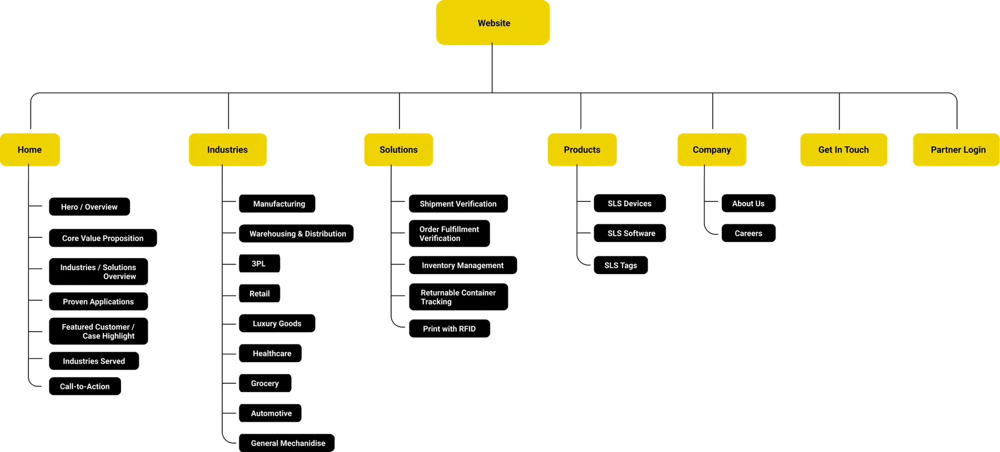
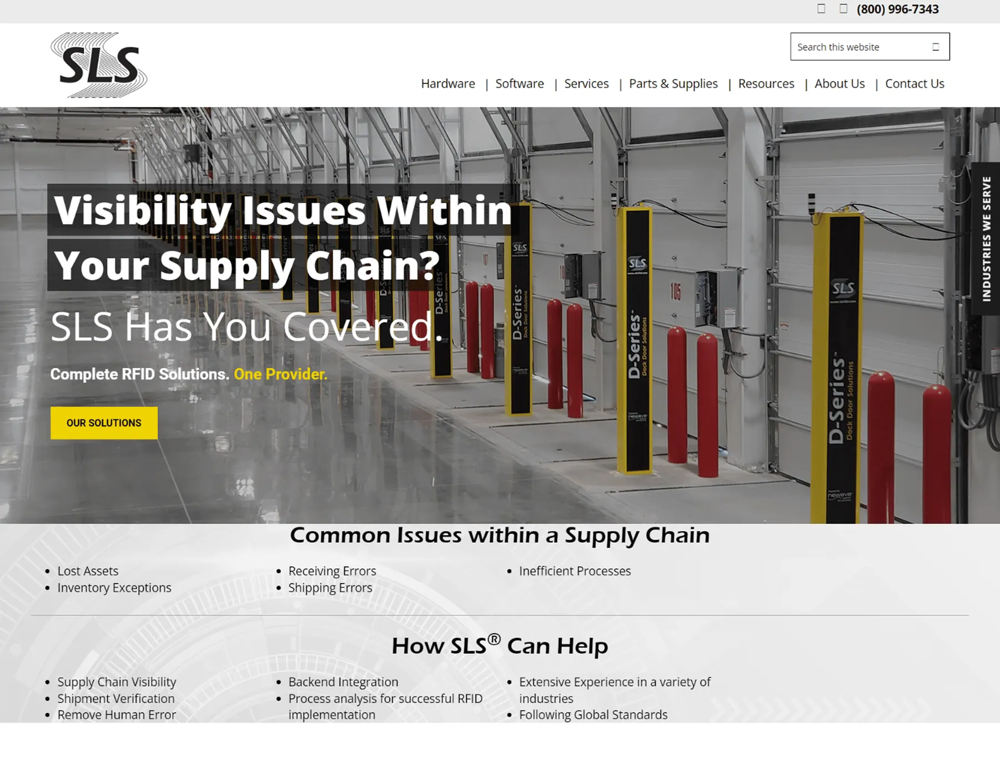
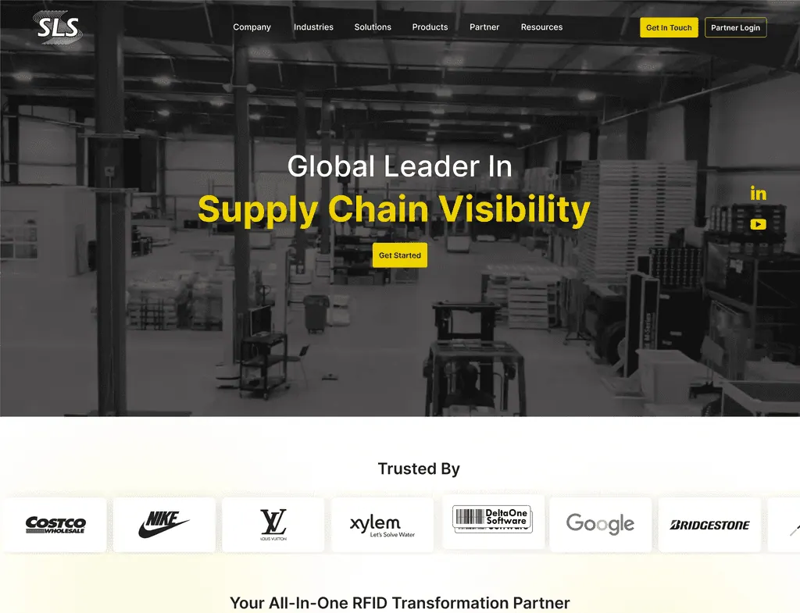
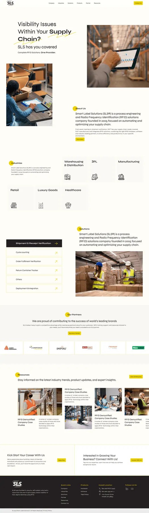
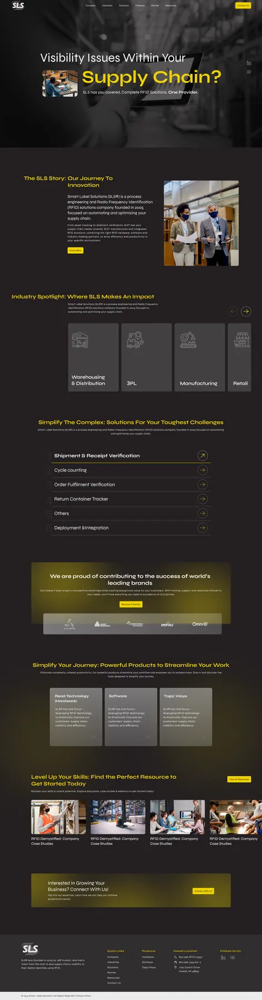
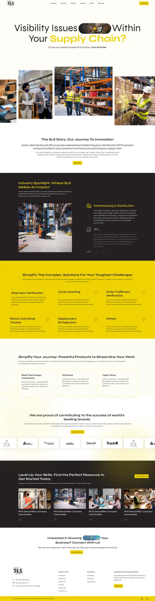
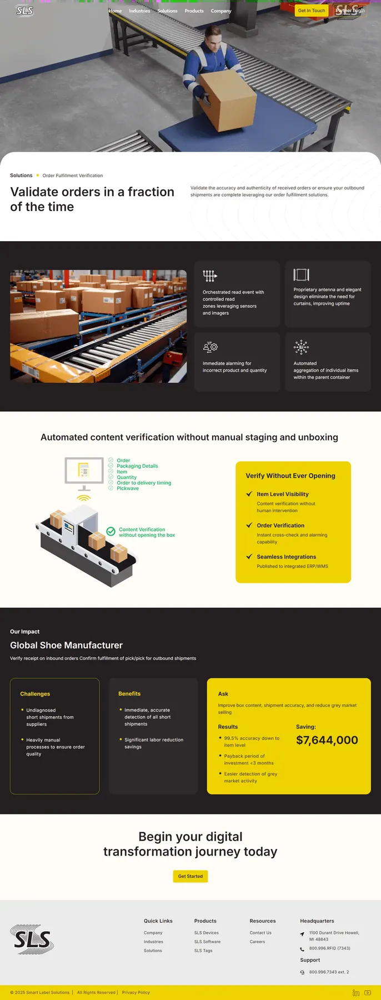
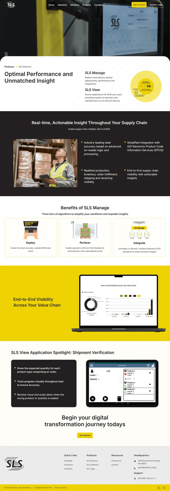

Case Study
SLSRFID
Redesigning an enterprise RFID platform for clarity at scale. Transforming complex supply-chain technology into a clear, decision-ready digital experience across devices.

The Context.
Complex tech, lost value.
SLSRFID is a global provider of RFID-based supply chain visibility solutions. While the technology was powerful, the existing website struggled to communicate its value to diverse stakeholders from logistics managers to C-suite executives.
The Problem
- Highly technical info presented too early
- Repetitive layouts diluted hierarchy
- No clear pathways for different intents
Design Goal
Create a system that educates, guides, and converts without overwhelming users. Balance technical depth with high-level outcome messaging.
Design Approach.
Clarity > Decorations
We mapped user flows for three distinct personas. The focus was on stripping away non-essential elements to ensure progressive disclosure of technical depth.
Clarity before Complexity
Introduce value first, reveal technical specifications progressively as the user digs deeper.
System-Based
A modular component library designed for scale across varying industries and product lines.
Responsive by Default
Ensuring operational clarity persists whether viewed on a warehouse tablet or an executive desktop.
Site Structure.
Restructuring for Mental Models
We moved away from a product-centric catalog to a solution-centric narrative. We separated "What we do" (Solutions) from "Where we apply it" (Industries).
Solutions
Explain the problem solved
Industries
Provide context & relevance
Outcomes
Proof via Case Studies

Visual Evolution
Moving from dense to hierarchical
Moving from a dense, text-heavy interface to a spacious, hierarchical design system.
Before
High Cognitive Load

After
Structured & Scannable

Homepage Exploration
Three directions, one synthesis
We explored three distinct narrative directions. Rather than selecting a single concept directly, the client and I worked together to synthesize the strongest elements from each into a unified design that aligned with business goals.



The Synthesis
Through multiple rounds of workshops and design iterations, we refined the homepage structure to balance clarity, credibility, and relevance. The final design presents solutions in a clear hierarchy, reinforces trust through strong credibility cues, and guides different user groups with intuitive segmentation creating an experience that supports both user goals and business positioning.
The Final System
A modular, responsive design language
A modular, responsive design language that communicates authority across every touchpoint.
Solution Page
Outcomes before implementation. We utilized a benefit-led structure that discloses technical depth progressively.
Product Page
Context before configuration. We structured product pages to reveal technical specifications only after system relevance is established.


The Impact
Clearer Conversion Pathways
Clearer Conversion Pathways
Separating educational content from transactional content reduced bounce rates on product pages.
Unified Sales & Marketing
Sales teams now use the website as a presentation tool during client meetings.
Reflection
This project reinforced that enterprise UX is not about adding information but structuring it.
Designing for decision-making, clarity, and scale proved essential in translating complex systems into usable experiences.
Let's Craft Quietly
Have a project in mind?
Let's bring it to life gently.